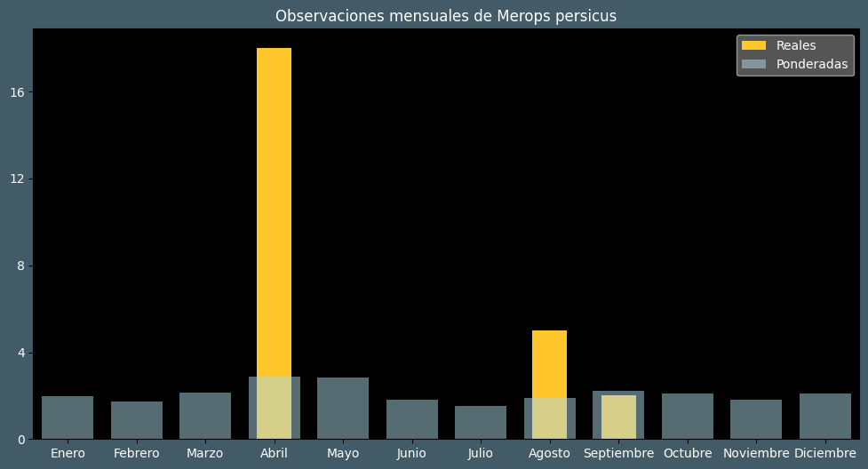

Observaciones por mes
Observations por hora

Categoría IUCN: ?
Género: Merops
Familia: Meropidae
Orden: Coraciiformes
Descubrimiento: Pallas (1773)
| Idioma | Nombre |
|---|---|
| Afrikaans (af) | Blouwangbyvreter |
| Arabic (ar) | وروار أزرق الخد |
| Belarusian (be) | ? |
| Bulgarian (bg) | Зелен пчелояд |
| Catalan (ca) | Abellerol persa |
| Chinese (zh) | 蓝颊蜂虎 |
| Chinese traditional (zh-TW) | 藍頰蜂虎 |
| Croatian (hr) | Plavolica pčelarica |
| Czech (cs) | Vlha modrolící |
| Danish (da) | Grøn biæder |
| Dutch (nl) | Groene bijeneter |
| English (en) | Blue-cheeked bee-eater |
| Estonian (et) | Rohe-mesilasenäpp |
| Finnish (fi) | Vihermehiläissyöjä |
| French (fr) | Guêpier de perse |
| German (de) | Blauwangenspint |
| Greek (el) | Πράσινος μελισσοφάγος |
| Hebrew (he) | שרקרק ירוק |
| Hungarian (hu) | Perzsa gyurgyalag |
| Icelandic (is) | Flugnasvelgur |
| Indonesian (id) | ? |
| Italian (it) | Gruccione egiziano |
| Japanese (ja) | ルリホオハチクイ |
| Korean (ko) | ? |
| Latvian (lv) | Persijas bišķērājs |
| Lithuanian (lt) | Mėlynskruostis bitininkas |
| Maceodnian (mk) | ? |
| Malayalam (ml) | നീലക്കവിളൻ വേലിത്തത്ത |
| North_sami (se) | Ruoná uvloborri |
| Norwegian (no) | Blåkinnbieter |
| Persian (fa) | زنبورخوار گلوخرمایی |
| Polish (pl) | Żołna modrolica |
| Portuguese (pt) | Abelharuco-persa |
| Russian (ru) | Зелёная щурка |
| Serbian (sr) | Velika zelena pčelarica |
| Slovak (sk) | Včelárik modrolíci |
| Spanish (es) | Abejaruco persa |
| Swedish (sv) | Grön biätare |
| Thai (th) | ? |
| Turkish (tr) | Yeşil arıkuşu |
| Ukrainian (uk) | Бджолоїдка зелена |